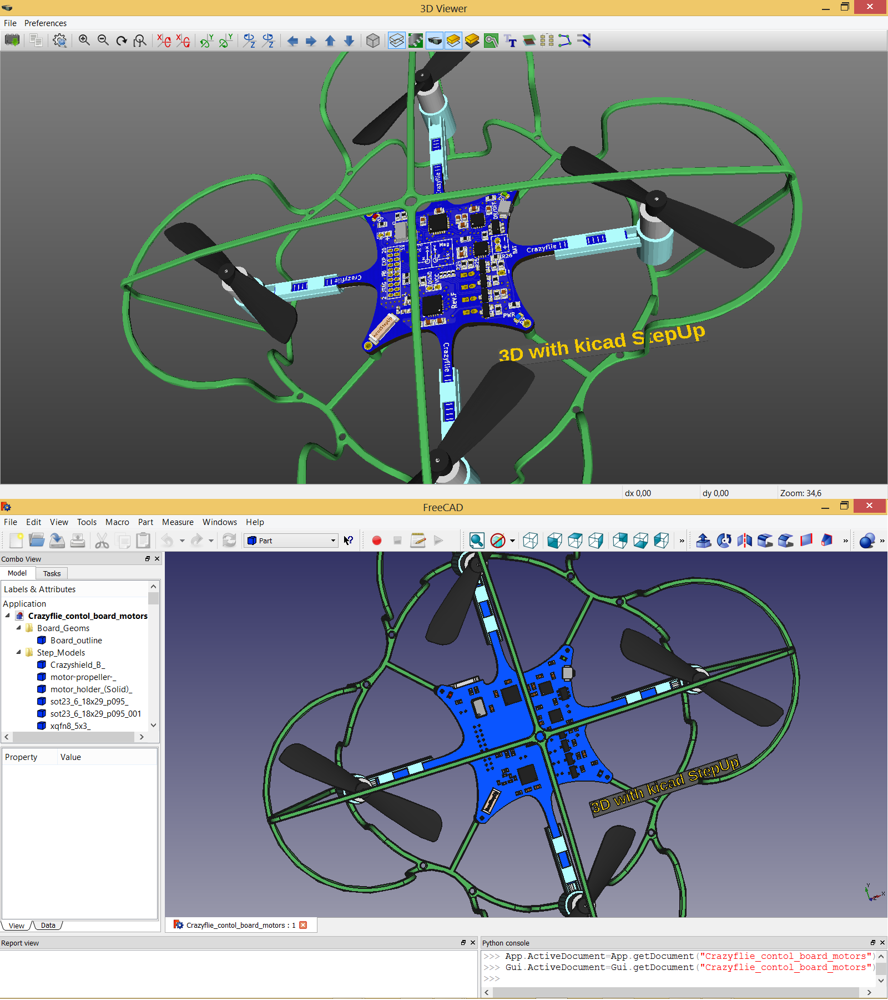
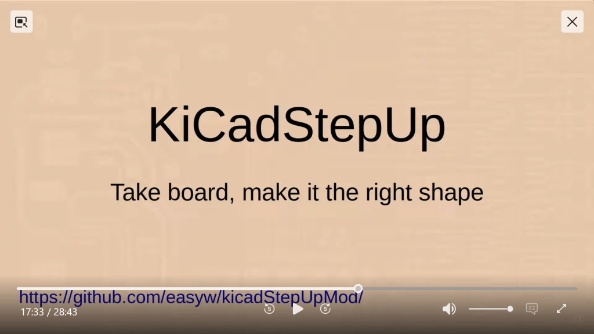
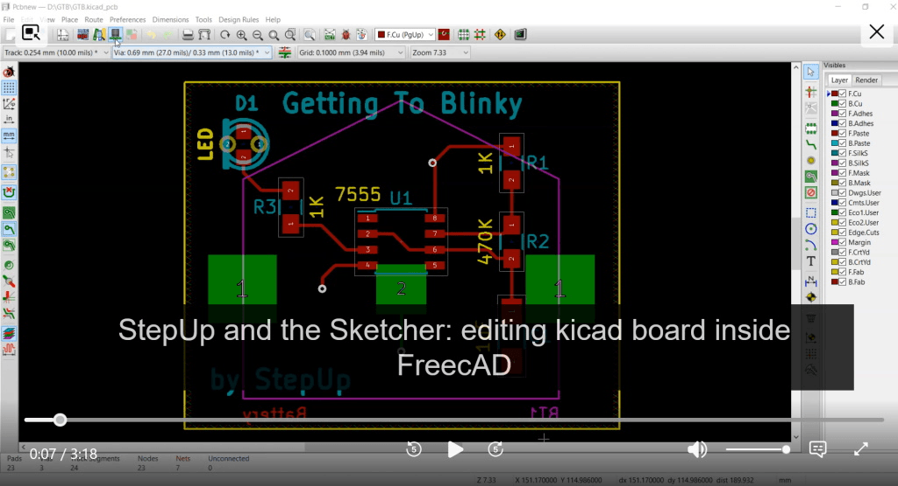
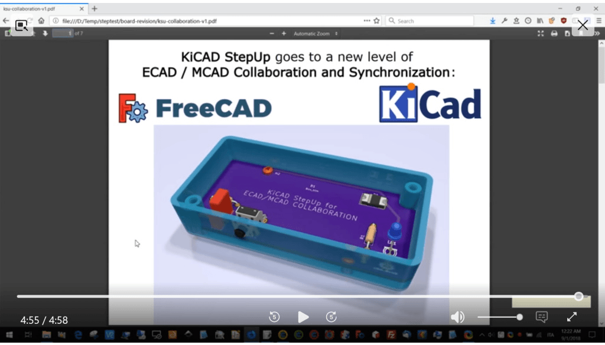
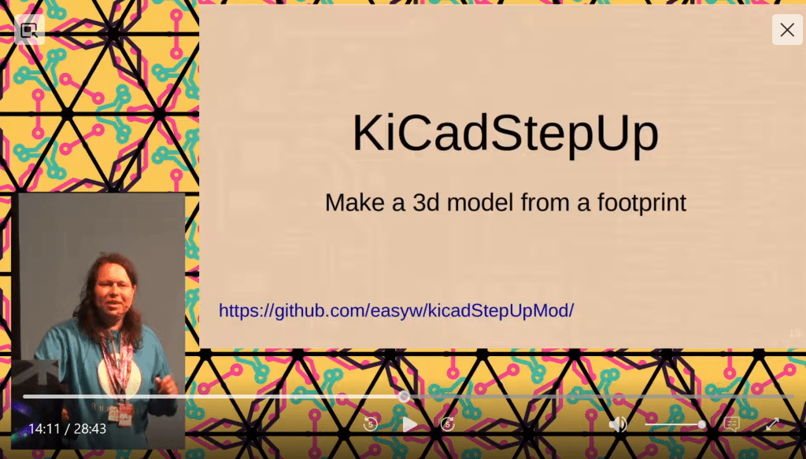
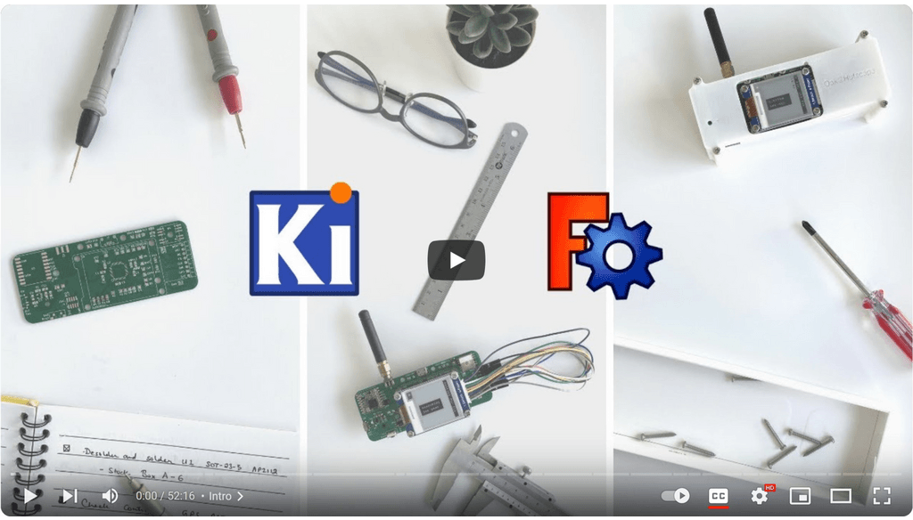

kicadStepUp-WB

KiCad StepUp tools are a FreeCAD Macro and a FreeCAD WorkBench to help in Mechanical Collaboration between KiCad EDA and FreeCAD or a Mechanical CAD.
KiCad StepUp features:
- load kicad board and parts in FreeCAD and export it to STEP (or IGES) for a full ECAD MCAD collaboration
- load kicad_mod footprint in FreeCAD to easy and precisely align the mechanical model to kicad footprint
- convert the STEP 3D model of parts, board, enclosure to VRML with Materials properties for the best use in kicad
- check interference and collisions for enclosure and footprint design
- design a new pcb Edge with FreeCAD Sketcher and PUSH it to an existing kicad_pcb Board
- PULL a pcb Edge from a kicad_pcb Board, edit it in FC Sketcher and PUSH it back to kicad
- design a new footprint in FreeCAD to get the power of Sketch in footprints
- generate Blender compatible VRML files
- translation infrastructure enabled
Please see KiCad Info forum or FreeCAD forum to discuss or report issues regarding this Addon.

Installing
Download and install your corresponding version of FreeCAD from wiki Download page and either install
- automatically using the FreeCAD Add-on Manager (bundled in to FreeCAD under Tools Menu)
- manually by copying the kicadStepUpMod folder to the Mod sub-directory of the FreeCAD application.
StepUp Cheat sheet
kicad StepUp Cheat sheet
StepUp Videos
ECAD-MCAD-collaboration: Complex Edge Sketch to PCB

ECAD-MCAD-collaboration: Push&Pull Edge to PCB

ECAD MCAD Synchronization: Push & Pull model placement in 3D environment

ECAD-MCAD-collaboration: Footprint in FreeCAD

ECAD-MCAD-collaboration: FreeCAD + KiCAD complete walkthrough design

Requirements
FreeCAD 0.19, 0.20, 0.21, 0.22, 1.0
KiCAD 5.1, 6.x, 7.x, 8.x
KiCAD 8.99 nigthly (partially supported)
Known issues
- on Linux FreeCAD Snap and Flatpak you may need to use 'mount bind' to have access to KiCad 3D models path
License
GNU AFFERO GENERAL PUBLIC LICENSE